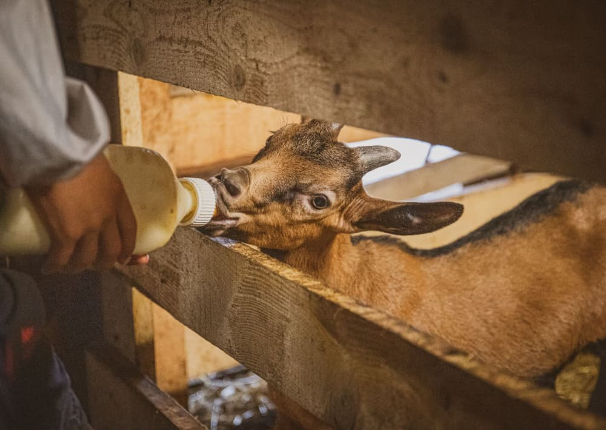

Venez voir les chèvres de près
Marlène ouvre les portes de la chèvrerie sur demande, pour les familles, les groupes et tous les curieux de passage à Murat ou au Lioran.

Un moment dans la vie d'une ferme de montagne
On fait le tour de la chèvrerie, on rencontre le troupeau et, au bon moment de l'année, les chevreaux. Marlène explique son travail : le pâturage, le foin, la traite, et comment le lait devient fromage dans l'atelier.
La visite se termine par la vente à la ferme, pour ceux qui veulent repartir avec quelques cabécous.
Réserver en trois temps
- Appelez ou envoyez un SMSAu 06 79 16 86 98, en précisant la date souhaitée et le nombre de personnes.
- On cale l'horaire ensembleLa journée d'une ferme laitière tourne autour de la traite et de la fabrication. L'heure de visite est fixée en fonction.
- Rendez-vous au LapsouPrévoyez de bonnes chaussures : on marche dans la cour, dans la bergerie et parfois jusqu'au pré.
Ce que vous allez découvrir
Les chèvres alpines
Une race rustique, à la robe chamoisée, bien adaptée à la montagne. Chacune a son caractère.
Les chevreaux
À la saison des naissances, les petits sont nourris au biberon. Les enfants adorent.
La fabrication
Le caillage, le moulage à la main, le hâloir où les fromages s'affinent.
Le paysage
À 1100 mètres, la vue sur les monts du Cantal vaut à elle seule le détour.